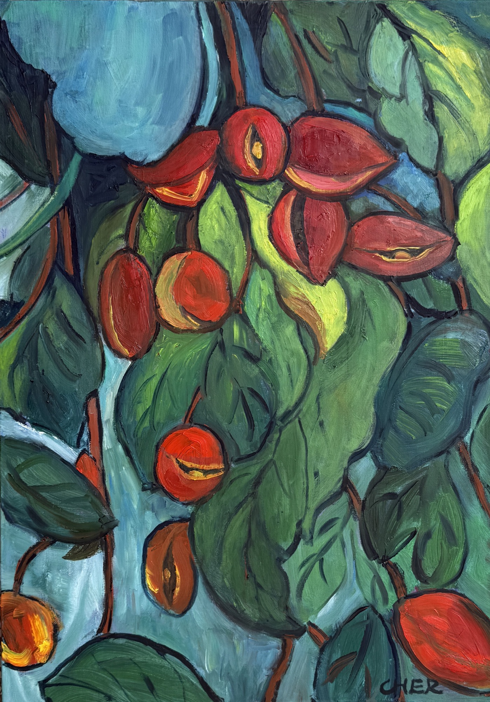

Fengyanguo
凤眼果

- Artwork ID / 作品编号
- KW-O-000002
- Year / 年份
- 2023
- Medium / 媒介
- Oil on canvas / 布面油画
- Dimensions / 尺寸
- 79 × 50 cm (H × W / 高 × 宽)
About the work / 作品介绍
Chinese Olive Fruit was completed in 2023 and is inspired by the distinctive fruit of the Chinese olive tree. Rather than depicting botanical details realistically, the painting employs simplified forms, bold colors, and rhythmic lines to transform ripening fruit into a visual metaphor for vitality and growth. The contrast between vivid red fruits and lush green foliage reinforces the energy of nature.Through expressive oil brushwork, the work moves beyond representation, presenting the fruit as a symbol of renewal, abundance, and the continuous generation of life.
《凤眼果》创作于2023年，以岭南常见植物凤眼果为创作对象。作品并未采用自然主义再现，而是运用概括的造型、浓烈的色彩与富有节奏感的线条，将果实成熟、裂开的瞬间转化为富有生命张力的视觉语言。红色果壳与绿色叶片形成鲜明对比，强化了生长、成熟与孕育的生命意象。作品关注植物内部蕴藏的生命力量，而非单纯描绘自然形态。通过油画厚重而自由的笔触，使植物形象具有象征意味，呈现自然生命持续生成的能量。